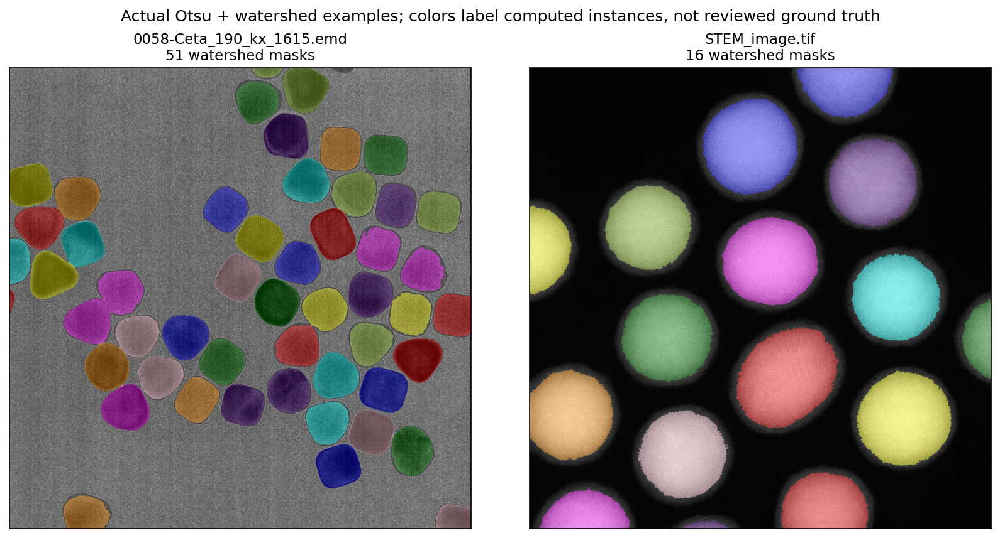

Otsu + watershed: parameters and preview#
This classical method separates bright or dark foreground from background, then splits touching particles using distance peaks. It needs no SAM model, GPU or token. Similar intensities, hollow particles and textured backgrounds can make the threshold or splitting unreliable; inspect the overlay.

Controls in dialog order#
Control |
Default; allowed values |
What to adjust |
|---|---|---|
Polarity |
auto; auto / bright / dark |
Select the actual object contrast. Auto estimates background from the border; override it for dense/edge-filled fields. |
Gaussian sigma |
1.5; 0–20 px |
Smooth before thresholding. Start 1–2; larger values can merge weak/small particles. |
Threshold offset |
0; −0.5–0.5 normalized span |
Add to Otsu threshold. For bright objects, positive values shrink the foreground; for dark objects they expand it. |
Minimum area |
20; 1–10,000,000 px |
Remove small components and final fragments. Estimate the smallest real particle’s area. |
Opening radius |
0; 0–30 px |
Remove thin bridges/speckles before splitting; 0 disables it. |
Fill holes |
on |
Fill foreground cavities before distance calculation. Turn off if holes must remain in the mask. |
Seed distance |
12; 1–512 px |
Minimum spacing between distance peaks. Increase to reduce over-splitting; decrease to find close neighbors. |
Seed height |
2; 0–256 px |
Reject shallow peaks. Increase to suppress tiny seeds. |
Distance sigma |
1; 0–10 px |
Smooth the distance map before locating peaks. |
Compactness |
0; 0–1 |
Bias watershed toward more regular shapes; compare carefully for elongated objects. |
Watershed line |
off |
Leave a one-pixel unassigned boundary between adjacent labels. |
Maximum objects |
300; 1–3,000 |
Cap output, largest first, to limit clutter and memory. A separate allocation guard rejects excessive mask memory. |
Starting presets on the supplied examples#


Image |
Changes from defaults |
Actual candidate count |
|---|---|---|
|
dark; Gaussian sigma 2; minimum area 300; seed distance 35 |
51 |
|
bright; Gaussian sigma 2; minimum area 1,000; seed distance 100 |
16 |
These are measured application outputs, not ground-truth accuracy scores. Start with correct polarity and threshold, then tune seed distance for splitting; use minimum area last to remove fragments. See the example gallery.